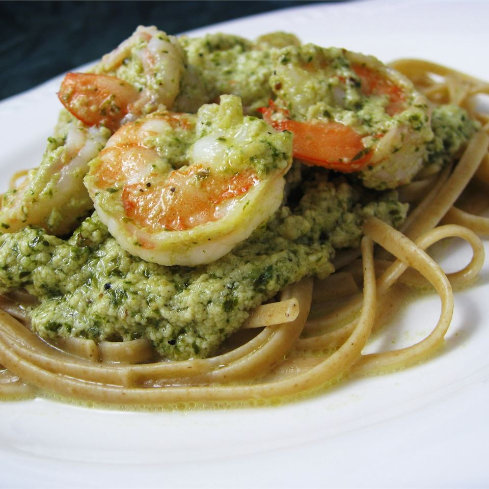

Creamy Pesto Shrimp

Description
One of our family's favorites, it's also great when
made with crab meat instead of the shrimp.
Prep: 15 mins
Cook: 15 mins
Total: 30 mins
Servings: 8
Ingredients
- 1 pound linguine pasta
- ½ cup butter
- 2 cups heavy cream
- ½ teaspoon ground black pepper
- 1 cup grated Parmesan cheese
- ⅓ cup pesto
- 1 pound large shrimp, peeled and deveined
Directions
-
Bring a large pot of lightly salted water to a boil.
Add linguine pasta, and cook for 8 to 10 minutes,
or until al dente; drain.
-
In a large skillet, melt the butter over medium heat.
Stir in cream, and season with pepper. Cook 6 to 8
minutes, stirring constantly.
-
Stir Parmesan cheese into cream sauce, stirring until
thoroughly mixed. Blend in the pesto, and cook for 3 to
5 minutes, until thickened.